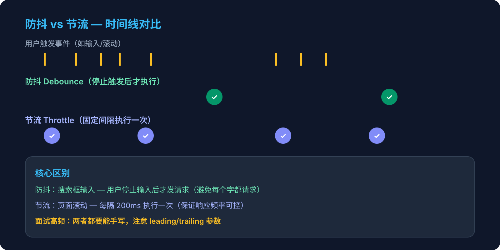

第1周 · JavaScript 深度 · 周末动手写

最后一次触发后，等待 delay 再执行。如果在 delay 内再次触发，重新计时。
类比：电梯关门 —— 有人进来就重新等
每隔 delay 执行一次，无论触发多少次。固定频率执行。
类比：技能冷却 —— CD 好了才能再放
搜索框实时搜索用防抖还是节流？滚动加载用哪个？
在输入框中快速打字，观察防抖和节流的执行时机区别（delay = 500ms）：
function debounce(fn, delay) {
let timer = null
return function(...args) {
clearTimeout(timer)
timer = setTimeout(() => {
fn.apply(this, args)
}, delay)
}
}clearTimeout + 重新 setTimeout 实现"重新计时"fn.apply(this, args) 保证 this 指向和参数传递正确
function debounce(fn, delay, immediate = false) {
let timer = null
return function(...args) {
if (immediate && !timer) {
fn.apply(this, args)
}
clearTimeout(timer)
timer = setTimeout(() => {
timer = null
if (!immediate) fn.apply(this, args)
}, delay)
}
}immediate 参数有什么用？
!timer 判断是否是"第一次"（冷却结束后 timer 被设为 null，又可以立即执行了）。
function throttle(fn, delay) {
let lastTime = 0
return function(...args) {
const now = Date.now()
if (now - lastTime >= delay) {
fn.apply(this, args)
lastTime = now
}
}
}function throttle(fn, delay) {
let timer = null
return function(...args) {
if (!timer) {
timer = setTimeout(() => {
fn.apply(this, args)
timer = null
}, delay)
}
}
}时间戳版和定时器版有什么区别？
防抖和节流都是优化高频事件的手段。
防抖的核心是"延迟执行"——每次触发都重置计时器，只有停止触发后等够延迟才真正执行。适用于搜索输入、窗口 resize 等场景。实现上用闭包保存 timer，每次 clearTimeout 再重新 setTimeout。
节流的核心是"固定频率"——不管触发多频繁，都按固定间隔执行一次。适用于滚动监听、mousemove 等场景。有时间戳和定时器两种实现，时间戳版首次立即触发（leading），定时器版最后一次也能触发（trailing）。
在实际项目中，我会根据业务需要选择：需要即时反馈用节流，需要最终态用防抖。